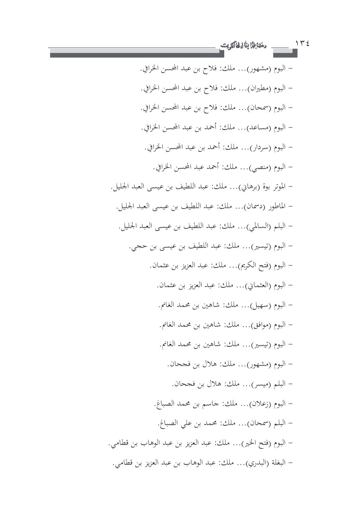

نُشر ٢٠١١ · صفحات من كتاب إبراهيم حامد الخالدي، الكويت، ٢٠١١
دخلنا بلدا يقال لها الكويت: صفحات القطامي
ما هي
تذكر الصفحة ١٣٤ البوم «فتح الخير» ملك عبدالعزيز بن عبدالوهاب بن قطامي، والبغلة «البدري» ملك عبدالوهاب بن عبدالعزيز بن قطامي. وتصف الصفحة ١٤٠ عبدالعزيز بن عبدالوهاب القطامي بأنه أخو النوخذة المشهور عيسى القطامي صاحب كتاب دليل المحتار، وأنه درّب أولاده على قيادة السفن وخلفه عدد منهم بعد وفاته. وتذكر الصفحة ١٥٤ عن المجلس التشريعي سنة ١٩٣٨ أن الشاب محمد عبدالعزيز القطامي ترأس قوة حراسة السواحل، وأن عبدالوهاب عيسى القطامي كان يرأس البلدية. وتذكر الصفحة ٢١٠ أن كتاب دليل المحتار في علم البحار ألفه عيسى القطامي وطبعه خارج الكويت سنة ١٩٤٢، وكان أصحاب السفن يحملونه معهم للاستدلال به.
أهميتها
كتاب منشور واحد يجمع سفن العائلة، والأخوين عيسى وعبدالعزيز، والأبناء الذين خلفوا عبدالعزيز في البحر، وأدوار العائلة سنة ١٩٣٨.
صور الصفحات


ملاحظات
تذكر الصفحة ٢١٠ سنة ١٩٤٢ لطبع دليل المحتار، والموقع يذكر طبعة ١٩٥٠، وقد تكون ١٩٤٢ طبعة سابقة. نعرض هنا الصفحات الأولى فقط، ويرى أفراد العائلة بعد تسجيل الدخول كل الصفحات وعددها 5.
المصادر
إبراهيم حامد الخالدي، دخلنا بلدا يقال لها الكويت: سياحة تاريخية وجغرافية وأدبية في ماضي الوطن، الكويت، ٢٠١١
كيف كُتب هذا النص: مصورة من الصفحات المطبوعة.
افتح في الموقع التفاعلي